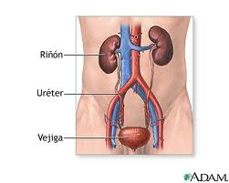
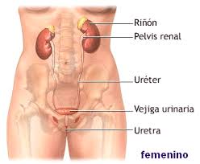

Sistema Excretor
También llamado aparato urinario, es el sistema encargado de liberar al cuerpo de las sustancias y residuos metabólicos nocivos, cuya acumulación en el organismo es riesgosa. Para ello cuenta con dos tipos de vías de expulsión:
- Las glándulas sudoríparas. Que se hallan a lo largo de la piel y expulsan el sudor, un liquido salino en el que nos deshacemos de muchas sustancias nocivas y microorganismos patógenos.
- El aparato urinario. Compuesto por los riñones, filtros de la sangre en los que se depositan las sustancias metabólicas de desecho (como la úrea) y se convierten en orina, almacenada luego en la vejiga, adonde llega por los uréteres luego de diversos procesos de reabsorción y filtrado de sustancias aprovechables. Cuando la orina es bastante (alrededor de 400 cc) se expulsa a través de la uretra hacia afuera del cuerpo, en lo que se conoce como micción.
-
 